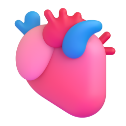

had heart or blood-vessel disease in the study data. Your answers put you in the Moderate group. This is an estimate to learn from, not a diagnosis.

The average person in the data starts at 47%. Each of your answers moved that line up or down. Added together, they reach your 69%.
Your cholesterol is the biggest reason your result is Moderate. Your age and doing less exercise than recommended add to it.
You did not know your blood pressure, so a typical value was used. A free check at a klinik kesihatan or pharmacy would make this result more accurate.
A good first step is building up to 150 minutes of brisk walking a week.
For learning only, not a diagnosis. Please talk to a doctor about your heart health.
About 5 fewer people in 100 like you.
69 in 100
Bricolage Grotesque for headings and numbers. Atkinson Hyperlegible for reading, a typeface made for people with low vision, at 17 px.